Adhesives
How adhesion works, the main adhesive families, how to design and prepare a bonded joint, how it is tested, and how adhesive joints fail and degrade.
Central idea: an adhesive is a chemical joining method: a polymer that wets the surfaces of two parts, fills their roughness and hardens, so the load passes from one part to the other over the whole bonded area instead of through a few holes or a weld bead. How well it holds depends on two things that act in series: adhesion (the forces across the adhesive-adherent interface, explained by mechanical, electrostatic, diffusive, adsorption and chemical mechanisms) and cohesion (the strength of the adhesive itself). A good joint is therefore built in a chain of steps (selection, joint design, surface preparation, application, assembly, curing and testing), is loaded in shear or compression and never in peel or cleavage, fails cohesively rather than at the interface, and is degraded over time by temperature, moisture, corrosion and ageing.
This page follows the single official session of Topic 11 (Session 24) slide by slide. Part I covers the introduction and the mechanisms of adhesion (Slides 1 to 9), Part II the classification and types of adhesives (Slides 10 to 14), Part III design and processing (Slides 15 to 24), Part IV testing, failure and degradation (Slides 25 to 34) and Part V the examples and property tables (Slides 35 to 38). Every section names the slides it comes from. Figures are copied from the slides as PNG crops, and each caption names its slide. Anything that is not printed on the slides is marked as an extension. The topic has no problem sheet.
Part I — Introduction and Mechanisms of Adhesion (Session 24, Slides 1–9)
§ 1 Overview of joining methods [Session 24 Slides 1-2]
Slide 1 is the title and the agenda: introduction, mechanisms of adhesion, classification and types of adhesives, design and processing considerations, testing methods, modes of failure, degradation mechanisms and examples.
A structure is a group of assembled elements that behaves like a whole under mechanical stresses [Session 24 Slide 2]. To make it behave as one piece, its elements must be joined, and the slide groups the joining methods in three families:
- Physical systems: mechanical bonding with fasteners, screws, bolts and nuts, rivets, etc.
- Metallurgical systems: welding.
- Chemical systems: adhesives.
The advantage of adhesives that the slide singles out is the uniform stress distribution. A rivet or a bolt carries the load through a hole, so the stress concentrates around each fastener (and the hole itself is a notch); a weld concentrates the load along its bead and changes the microstructure of the heat-affected metal. An adhesive layer instead transfers the load over the whole overlap, which is why it suits the thin sheets and composite skins of aircraft.
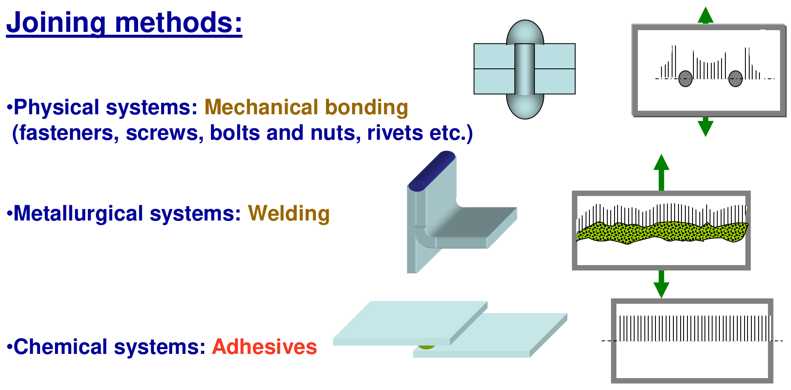
§ 2 Definitions, advantages and disadvantages [Session 24 Slide 3]
- Adhesive: a compound or substance that adheres or bonds two items together; a substance capable of holding other materials together by surface attachment.
- Adhesion: the property of sticking together, or the joining of surfaces usually of different composition; the state of two surfaces kept together through interfacial forces (intermolecular, chemical, mechanical or both).
- Adherent: the substrate over which the adhesive is applied (the later slides also write "adherend").
The advantages and disadvantages printed on the slide follow from the fact that the joint is a thin polymer layer working through its surfaces:
| Advantages | Disadvantages |
|---|---|
| Uniform stress distribution | Surface preparation required |
| No distortion of substrates | Curing time |
| Bonding of dissimilar materials | Limited temperature capability |
| Simultaneous sealing | Poor peel strength |
| Corrosion protection by isolation | Limited reliability in hostile environmental conditions |
| Reduction of the number of components | Toxicity |
| Aesthetics: flatter surfaces, hiding joints | |
| Delicate and complicated components can be joined |
No heat is needed to melt the parts, so the substrates do not distort and dissimilar materials (a composite to a metal) can be joined; the polymer layer seals the joint and insulates the two metals electrically, which prevents galvanic corrosion. On the other side, a polymer softens at moderate temperature (limited temperature capability), the interface must be clean to form (surface preparation), the polymer needs time to harden (curing time), and a thin layer pulled at its edge concentrates the load on a line (poor peel strength, Section 13).
§ 3 Adhesion versus cohesion [Session 24 Slide 4]
A bonded joint has two kinds of links in series: adhesion, the mechanism that bonds the adhesive to the substrate, and cohesion, the intermolecular force that holds together the molecules of the adhesive. The joint breaks through its weakest link, which gives the two basic failure types:
- Adhesive failure: failure that occurs between two phases (at the adhesive-substrate interface).
- Cohesive failure: failure that occurs within a phase (inside the adhesive).
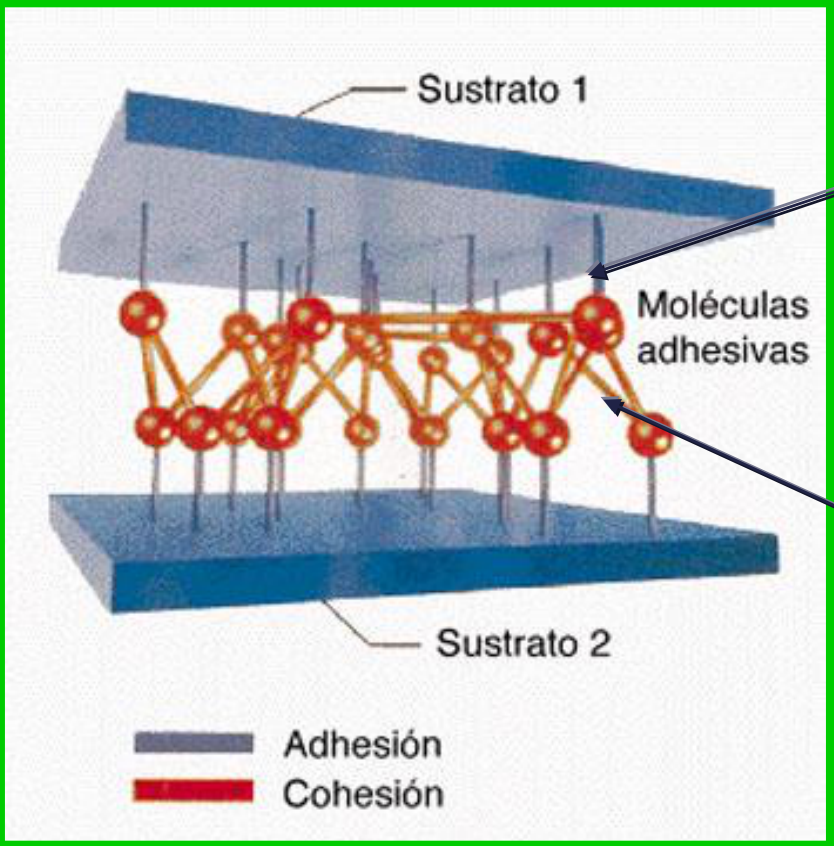
The figure of Slide 4 is labelled in Spanish: "Sustrato 1" and "Sustrato 2" are substrate 1 and 2, "Moléculas adhesivas" are the adhesive molecules, and the legend marks adhesion (at the substrates) and cohesion (between the adhesive molecules).
§ 4 The mechanisms of adhesion [Session 24 Slides 5-8]
The theories of adhesion try to explain why two materials stick, and there is no universal adhesion theory [Session 24 Slide 5]: in a real joint several mechanisms act at once. The slides list five.
4.1 Mechanical adhesion
The oldest theory: the adhesive interlocks mechanically in the surface roughness of the interface or in the pores of the substrate, like a key in a lock [Session 24 Slide 6]. Adhesive joints often have an important mechanical component, but it does not suffice as the only mechanism. It is favoured by a larger substrate surface area (more roughness) and by penetration of the adhesive into the pores. Examples on the slide: sewing (at a large scale) and Velcro.
4.2 Electrostatic adhesion
In metal/adhesive joints the different nature of the two materials allows electrons to transfer from the metal to the adhesive, so a difference of electrical charge forms at the joint. The result is a structure similar to a capacitor, and the opposite charges attract each other [Session 24 Slide 6].
4.3 Diffusive adhesion
When the molecules of both materials (adhesive and adherent) are mobile and soluble in each other, they interdiffuse across the interface, and the interface disappears into an interphase [Session 24 Slide 7]. It explains the adhesion between polymers by chain migration (the polymers must be soluble in each other), and it is also the mechanism of sintering (compare the diffusion of Topic 3).
4.4 Adsorption (physical adsorption) or dispersive adhesion
The adhesion forces are interface molecular forces, secondary bonds such as van der Waals forces or hydrogen bonds [Session 24 Slide 7]; a van der Waals force is the attraction between two molecules with positively and negatively charged ends. These forces act only at very short distances, so the adhesive must come into molecular contact with the whole surface: adhesion is produced when the adhesive wets the adherent, and good wetting is necessary.
4.5 Chemical adhesion (chemisorption)
Primary bonds (ionic or covalent) form between the adhesive and the adherent [Session 24 Slide 8]. The strongest joins are those where the atoms of the two materials swap (ionic bonding) or share (covalent bonding) outer electrons; a weaker bond forms when oxygen, nitrogen or fluorine atoms of the two materials share a hydrogen nucleus (hydrogen bond). It needs reactive adhesives, such as epoxies or cyanoacrylates, and it can be promoted by a surface treatment of the substrate. Because primary bonds are much stronger than secondary ones (Topic 1), chemisorption gives the strongest interfaces.
§ 5 Other factors: wetting and surface roughness [Session 24 Slide 9]
- Wetting: the adhesive must wet the adherent for good adhesion. A liquid that wets spreads over the surface and reaches the bottom of its roughness; one that does not wet stays as a rounded drop and touches the surface only at a few points.
- Surface roughness: increasing the roughness (by abrasion) improves the bond strength, because it (1) raises the contact area and (2) removes surface contaminants. However, the roughness must not be too high, because air may remain trapped in the deep valleys and the joint may lose its strength.
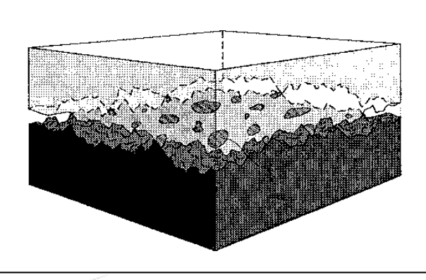
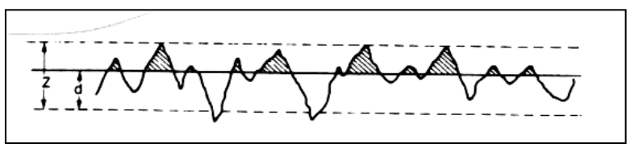
The drops of the slide show the three degrees of wetting: deficient, partial and total (the slide labels them in Spanish, "mojado deficiente", "mojado parcial" and "mojado total"). Total wetting is what the adhesive needs.

The degree of wetting is usually measured by the contact angle $\theta$ of the drop on the surface: small $\theta$ means good wetting, $\theta$ above $90^\circ$ poor wetting. The slides do not define it.
Part II — Classification and Types of Adhesives (Session 24, Slides 10–14)
§ 6 General components of an adhesive [Session 24 Slide 10]
- Base product: the polymer, which forms the mass of the adhesive.
- Additives: substances added to modify the physical and chemical properties of the bulk polymer before and after curing:
- Colorants.
- Antioxidants.
- Primers: a low-viscosity adhesive applied before making the joint to improve adherence; it reduces the surface energy of the adherent (see Section 11).
- Plasticizers: solvents for the polymer; they separate the polymer chains and enable deformation, and they modify $T_g$ (the glass transition temperature falls as the chains slide more easily).
- Tackifiers: improve tack (the ability to stick) by reducing viscosity or improving wetting.
- Coupling agents: chemically reactive agents that promote adhesion by absorption (chemical or physical).
- Fluorescent substances.
- Fillers: substances that modify the rheology (flow) of the adhesive; inert fillers make the product cheaper or modify its density.
§ 7 Classification of adhesives [Session 24 Slides 11-12]
The slide classifies adhesives by four criteria [Session 24 Slide 11]:
- By application: structural (must withstand and transmit high stresses from one surface to another), support, light-duty or fixing (they only hold the weight of the adherent) and sealants (gap-filling adhesives).
- By temperature stability: thermoplastics (soften again on heating) and thermosets (cross-linked, they do not melt).
- By composition: animal origin (animal proteins, egg white, spider web, casein "glues"), vegetal origin ("resins": starch, dextrin, rubber, vegetable proteins) and synthetic (from the chemical industry).
- By curing: hot melts (thermoplastics; a molten polymer solidifies), prepolymerized (a solvent evaporates) and high-resistance or polymerizing (they polymerize in the joint).
The last criterion decides how well the final adhesive can be controlled [Session 24 Slide 12]. Prepolymerized adhesives contain a polymer in solution or suspension in a solvent (paper glue, sticky tapes); when the solvent evaporates the volume decreases, and it is difficult to remove all the solvent, so the adhesion cannot be easily controlled. In polymerizing adhesives, monomers polymerize in the joint itself: the process can be controlled and these are the high-resistance adhesives. By mechanical behaviour the slide groups them as:
| Group | Adhesives (Slide 12) |
|---|---|
| Rigid | Anaerobics; cyanoacrylates (bad for vibrations, $T_{max} = 80\ ^\circ\text{C}$); epoxies (very hard, bond almost any substrate, high strength, $T_{max} = 180\ ^\circ\text{C}$) |
| Tough | Acrylics (tougher than epoxies) |
| Flexible | Silicones (need room moisture to cure); polyurethanes (car windscreens) |
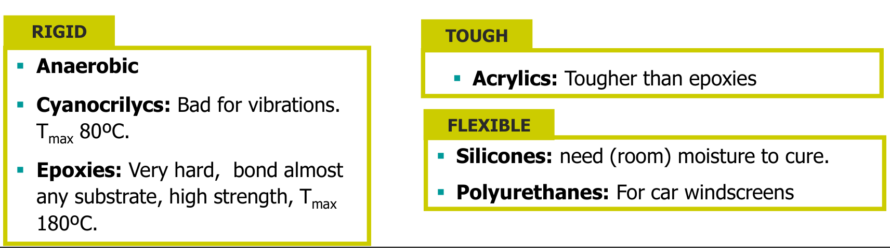
The slide closes with a rule of thumb: if it is a polymer, you can probably make an adhesive out of it.
Cyanoacrylates are printed "Cyanocrilycs" (Slide 12), "Cyanolacrylics" (Slide 13) and "Cyanoacrylate" (Slides 36 and 38); polyurethanes are printed "Polyurathenes" on Slide 14. This page uses the standard names. Slide 12 also places "Anaerobic" among the curing types; Slide 24 gives the curing reaction of each family.
§ 8 Anaerobics and cyanoacrylates [Session 24 Slide 13]
Anaerobic adhesives are single-component systems based on acrylic resins. They set in the absence of oxygen, usually in the presence of a metal, and can set without heating; oxygen inhibits them. This is why they stay liquid in the bottle (in contact with air) and harden only once trapped between two metal surfaces, such as the threads of a bolt. They have good sealing and damping properties, are brittle and are limited to $T < 150\ ^\circ\text{C}$. Example: Loctite, used for threaded fasteners.
Cyanoacrylates are single-component systems based on acrylic resins that react with the moisture on the surface: they harden in a few seconds in the presence of surface water. Advantages: fast with good adherence, high strength, rapidly evolving. Drawbacks: brittle, poor moisture resistance, expensive. Example: "Super glue".
Slide 13 prints both families as "acrylic resins (thermosetting)". Slide 36 lists the anaerobics as thermoset but the cyanoacrylates (and the acrylics) as thermoplastic. The cure of a cyanoacrylate is an anionic chain polymerization of a monofunctional monomer (Slide 24), which gives linear chains, so the thermoplastic label of Slide 36 is the consistent one (extension: this reasoning is not on the slides). Keep in mind that both labels appear in the official material.
§ 9 Epoxies and polyurethanes [Session 24 Slide 14]
Epoxies are based on an epoxide resin plus a hardener (two-component systems), or are single-component systems cured by heat, usually at $180\ ^\circ\text{C}$. They are the structural adhesives: high strength and excellent high-temperature performance; their drawback is that they are viscous and unsuitable for intricate work.
Polyurethanes are usually two-component systems, very reactive with other polymers (good adhesion), formulated for a wide range of applications. They are for low-temperature applications ($< 65\ ^\circ\text{C}$), flexible and tough, and sensitive to moisture and chemical environments.
The two families are the two ends of the rigid-flexible scale of Section 7, and Section 13 shows what that means in a peel test.
Part III — Design and Processing (Session 24, Slides 15–24)
§ 10 The chain of an adhesive joint and its design [Session 24 Slides 15-20]
An adhesive joint is made in a fixed sequence of steps [Session 24 Slides 15-16], and each step can ruin the joint:
- Adhesive selection.
- Design of the adhesive joint.
- Adherent preparation: control of roughness, cleanliness and contamination; stabilizing surface layers (pretreatment).
- Adhesive preparation: storage, mixing, etc.
- Adhesive application: brushing, flowing, film lay-up, etc.
- Joint assembly: jigging, application of pressure, etc.
- Formation of the adhesive joint.
- Curing.
- Testing (assessment of joint resistance).
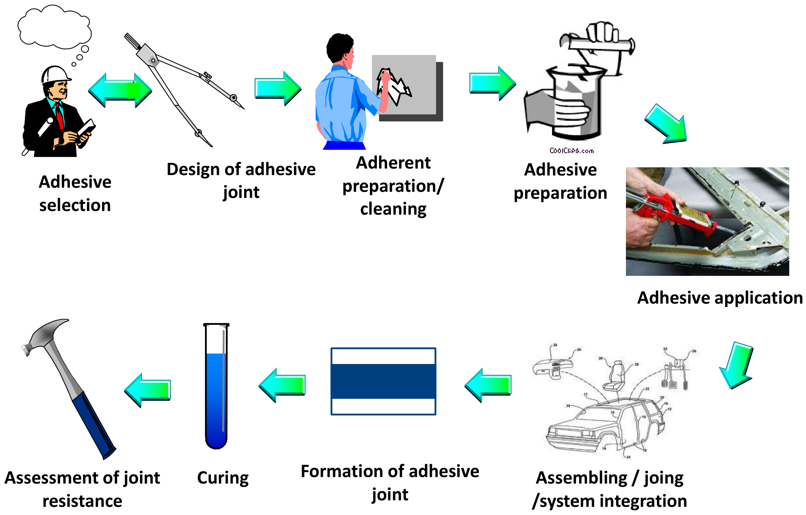
10.1 Adhesive selection
The choice weighs [Session 24 Slide 17]: the inherent ability to adhere to the substrate; the stresses in service; the environment (temperature, chemical environment); compatible coefficients of thermal expansion (a mismatch produces residual stresses on every temperature change, Section 15); special requirements (conductivity, appearance); production restrictions; cost; and health and safety (toxicity).
10.2 Design of the joint
The joint is designed by studying its stress distribution (shape, size and thickness of the parts) and adapting it to the strengths of the adhesive [Session 24 Slide 18]:
- Adhesives should ideally be loaded in shear or in compression.
- The design should minimize tensile peel and tensile loading (butt joints in thin sheet in tension, cleavage and peel are marked NO on the slide).
- Large bonding surfaces between the members are desirable.
The reason is the one of Section 2: in shear the whole overlap carries the load, while in peel or cleavage only the edge line of the adhesive does, so the same adhesive fails at a much smaller load.
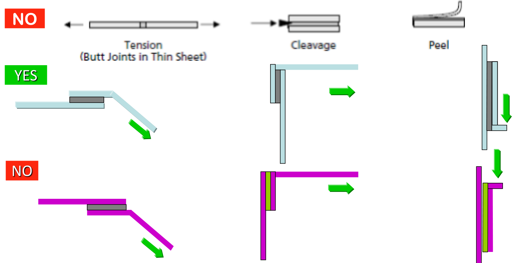
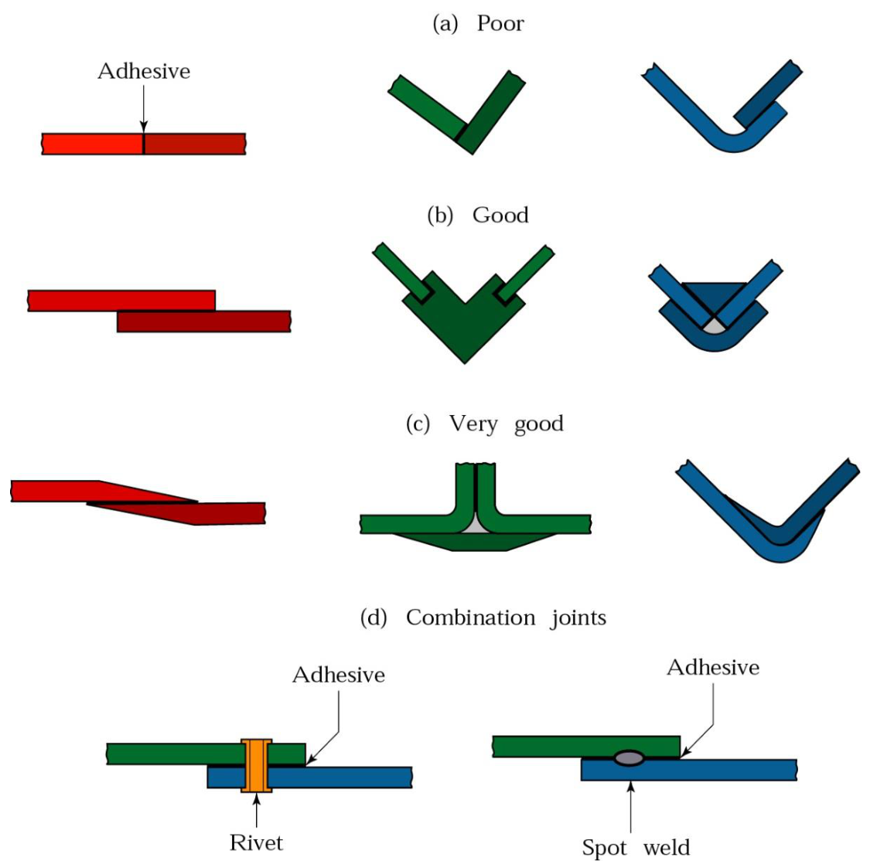
Slide 19 adds that subassemblies should be designed to minimize adhesive operations and that parts with complex curvature should be avoided; its figure ranks joint designs as poor, good, very good and combination joints (adhesive with a rivet or a spot weld). Slide 20 shows the standard cross-sections: simple lap, tapered lap, scarf, butt, strap, double strap, tapered double strap, double lap and stepped lap joints. The tapered, scarf and stepped variants spread the load transfer over the overlap and avoid the stress peaks at its ends.

§ 11 Adherent preparation and primers [Session 24 Slides 21-23]
The adhesive has to adapt to the surface and then harden [Session 24 Slide 21]. Three conditions:
- Surface roughness appropriate for the substrate (Section 5).
- Wettability: the fluid has to fill the roughness, so it must have a lower surface tension than the substrate (a liquid spreads on a solid of higher surface energy).
- Viscosity adequate to let the adhesive wet the roughness.
The objectives of the preparation are a sound adhesive-substrate interface, reproducible results, and no low-adhesion films such as oxides [Session 24 Slide 22]. The surface treatments are:
- Removal of surface contaminants: mechanical methods (abrasion, oxide removal) and chemical methods (solvents, acetone, alcohols, etc.: degreasing).
- Physical or chemical modification of the surface: appropriate roughness (grit blasting, anodizing on the slide) and improved adherence with primers.
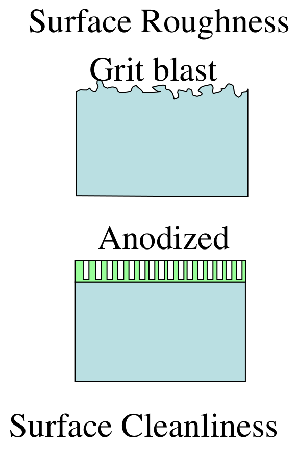
Good surface contact creates adhesion, and primers help to get it [Session 24 Slide 23]. A primer is a low-viscosity adhesive applied before making the joint to improve adherence: it prevents capillary absorption of the adhesive solution into a porous adherent and optimizes the interaction between substrate and adhesive (wetting, reactivity). Its objectives are to protect the substrate surface, optimize that interaction, increase the strength of the union, improve stress transfer, give flexibility to the process (a primed part can wait before bonding) and protect against UV radiation.
§ 12 Application and curing [Session 24 Slide 24]
The slide shows adhesive applied by brush or film, dispensing gun and spray. Curing can be induced by:
- Anaerobic reaction: in the absence of oxygen; curing begins when the adhesive is trapped in a closed system in the presence of metal ions (anaerobics).
- Radiation or light (UV): photoinitiation.
- Anionic reaction (cyanoacrylates): almost all substrates carry adsorbed water, whose OH⁻ initiates the polymerization by an anionic reaction (this is why Section 8 says they react with surface moisture).
- Activators (modified acrylics).
- Thermal treatment (epoxies).
- Biological components.
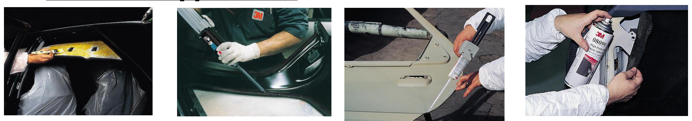
Part IV — Testing, Failure and Degradation (Session 24, Slides 25–34)
§ 13 Testing methods [Session 24 Slides 25-29]
The geometric factors that characterize an adhesive joint are the width of the bond, the overlap length and the thickness of adhesive and substrate [Session 24 Slide 25]. The tests are:
- Tack (instantaneous adhesion): the ability to stick and the wettability. The slide sketches a block touched to a surface and lifted, and a drop rolling a distance down an inclined plane.
- Peel test [Session 24 Slide 26]: gives the compatibility of a tape with a surface, like peeling adhesive tape from a solid. It depends on the substrate (roughness, nature), the peeling angle, the rate, the type of adhesive mechanism and the temperature. Variants: 180° peel, 90° peel and T-peel. Adhesive joints should not be loaded this way in service. The small graph of the slide shows the shear strength falling as the adhesive thickness grows.
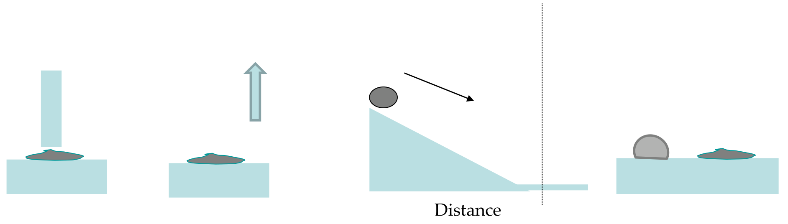
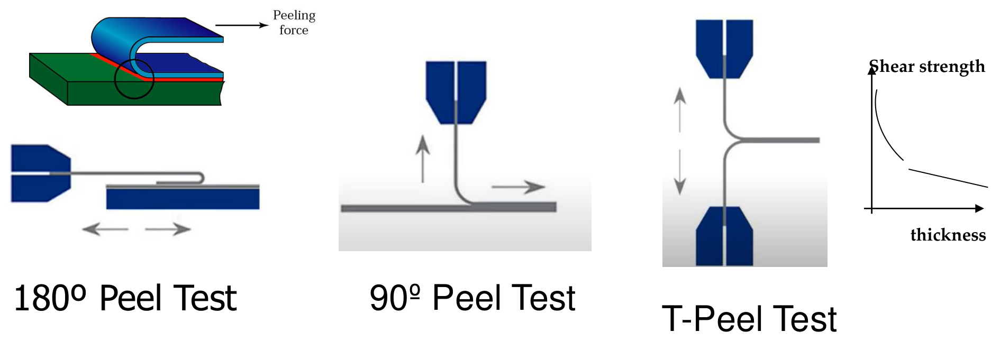
In a peel test a brittle adhesive and a tough one behave differently [Session 24 Slide 27]. In a rigid adhesive (epoxy) only the line at the adhesion front stands the stress, so the stress there is very high and the bond opens with little energy. In a flexible adhesive (polyurethane) a volume of adhesive deforms and withstands the stress, so more surface supports it. This explains the peel strengths of Slide 38: below 525 N/m for epoxy against 14 000 N/m for polyurethane (Section 17).
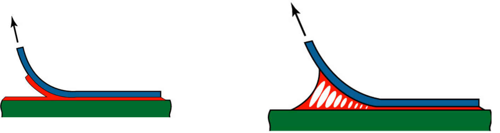
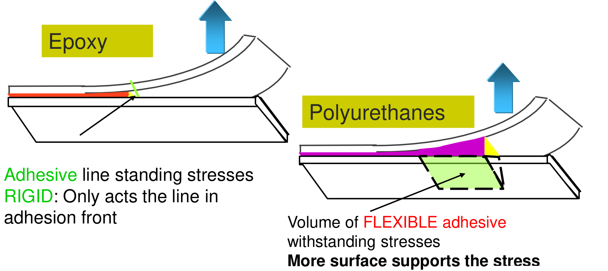
- Normal and shear stresses [Session 24 Slide 28]: specimens in compression, tension and shear. Under these loads the stresses are uniformly distributed in the joint and the whole surface works, so structural adhesives must have high strength.
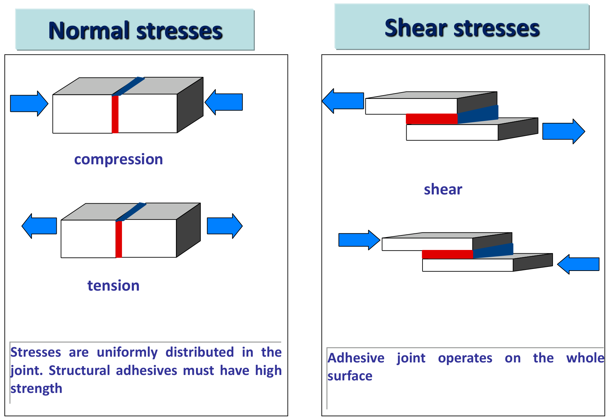
Slide 29 links three videos of the tests.
Slide 26 prints "d typo adhesive mechanism", read here as "type of adhesive mechanism".
§ 14 Modes of failure [Session 24 Slides 30-31]
As in Section 3, the failure is adhesive (between two phases) or cohesive (within a phase) [Session 24 Slide 30]. The slide shows four outcomes of a tensile shear test (standard UNE-EN 1465): cohesive failure, 50 % cohesive failure, adhesive failure, and substrate failure (the adhesive is over-dimensioned, so the substrate breaks first), with photographs of tested specimens labelled in Spanish ("rotura cohesiva", "rotura adhesiva", "rotura del material").
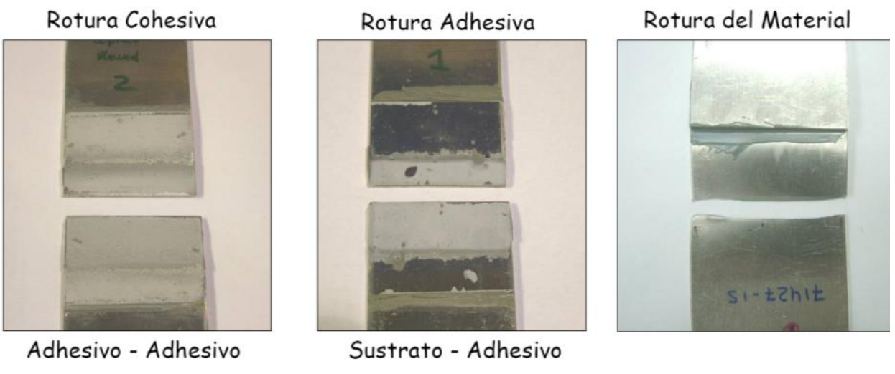
Slide 31 separates the modes a designer accepts from those that reveal a defect:
| Acceptable failure modes | Unacceptable failure modes |
|---|---|
| Cohesive failure of the adhesive | Adhesion failure of the adhesive/adherend interface |
| Surface ply delaminations (composite adherends) | Adhesive peel (excessive out-of-plane loads) |
| Adherend failure (static or fatigue) | Adhesive creep (flow) |
A cohesive failure means the interface was sound and the adhesive reached its own strength, which is predictable; an interface failure means bad preparation or contamination, a peel failure a joint loaded the wrong way, and creep an adhesive used above its temperature limit.
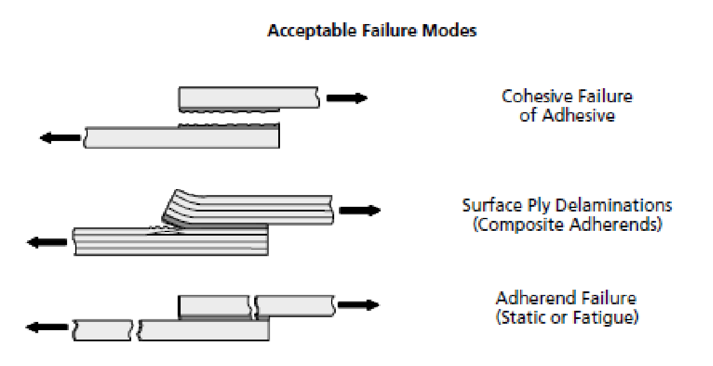
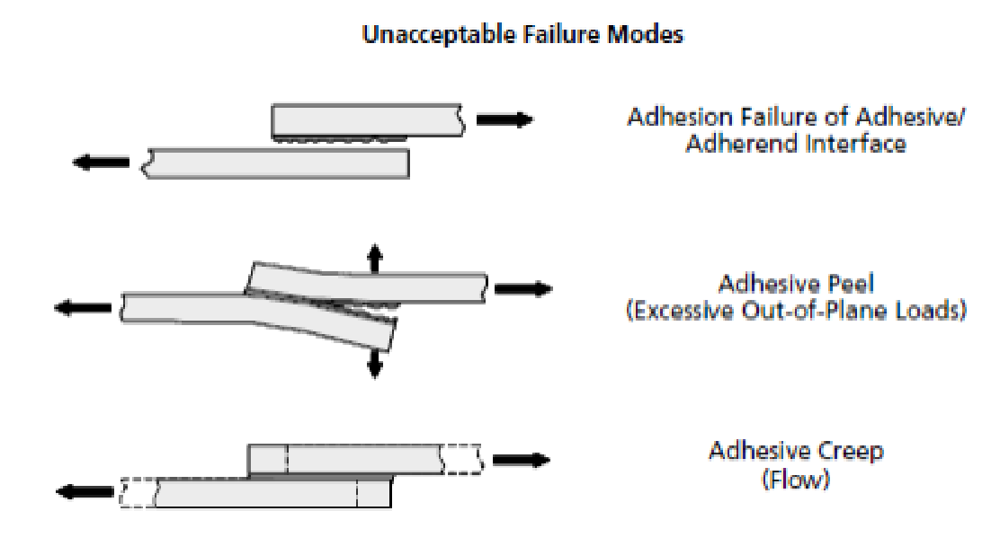
§ 15 Degradation mechanisms [Session 24 Slides 32-34]
Adhesive joints degrade gradually and fail: degradation reduces the properties and causes the failure, and it is the main problem of a bonded joint [Session 24 Slide 32]. The factors that affect durability are:
- Temperature: it modifies the interface properties; when $T$ rises the adherence falls, and differential thermal expansion produces residual stresses.
- Moisture: (a) the adhesive becomes more plastic, (b) hydrolysis, (c) micro-cracking; countered with fillers (mineral fillers, sealants, etc.).
- Electrochemical effects: corrosion of the adherents.
- The combination of temperature, moisture and mechanical loads.
- Ageing, due to UV light and temperature: if O₂ diffuses into the adhesive it forms hydroperoxides (polymer–O–O–H), and with temperature these split into R–O· + ·OH, free radicals that break the polymer chains.
Temperature [Session 24 Slide 33]. The tensile curves of an adhesive at −40 °C, ambient and 80 °C show that as $T$ decreases the adhesive becomes stronger and stiffer but breaks at a smaller strain, while at high temperature it softens. A difference in the coefficients of thermal expansion of the adherents causes residual stresses ($\sigma_{residual}$), in the way of the thermal stresses of Topic 7.

Moisture [Session 24 Slide 33]: water weakens the adhesive (it becomes more plastic); it displaces the adhesive bond at the interface by preferential attraction of water (segregation); it changes the adherents chemically (corrosion of the metal, hydrolysis of the oxide layer); and it can cause micro-cracking. The effect grows with temperature and humidity. The figure shows the three attacks at the interface.

Slide 33 prints "expasion" and "microcraking"; Slide 32 writes "joins" for joints.
The performance of an adhesive is judged by [Session 24 Slide 34]:
- Mechanical criteria: resistance to static loading, to fatigue and to impact.
- Physical-chemical criteria: temperature resistance, ageing with temperature, resistance to moisture and resistance to chemical agents.
Part V — Examples and Properties (Session 24, Slides 35–38)
§ 16 Examples of use [Session 24 Slide 35]
| Field | Use (adhesive) |
|---|---|
| Aircraft components | Structural joints (epoxies) |
| Automotive components | Trim, stiffeners (epoxies, acrylics) |
| Railway carriages | Joining composites to steel |
| Loudspeaker cones | Quick assembly (cyanoacrylates) |
| Footwear | Hot-melt adhesives |
| Shafts, bearings, studs | Anaerobics |
Each choice matches the properties above: epoxies where strength and temperature matter, cyanoacrylates where speed matters, anaerobics where the adhesive cures between close-fitting metal parts.
§ 17 General properties and the property table [Session 24 Slides 36-38]
Slides 36 and 37 give the general properties of each family:
| Type | Comments | Applications |
|---|---|---|
| Acrylic | Thermoplastic; quick setting; tough bond at room temperature; two component; good solvent, chemical and impact resistance; short work life; odorous; ventilation required | Fiberglass and steel sandwich bonds, tennis racquets, metal parts, plastics |
| Anaerobic | Thermoset; easy to use; slow curing; bonds at room temperature; curing occurs in absence of air, will not cure where air contacts adherents; one component; not good on permeable surfaces | Close-fitting machine parts such as shafts and pulleys, nuts and bolts, bushings and pins |
| Epoxy | Thermoset; one or two component; tough bond; strongest of engineering adhesives; high tensile and low peel strengths; resists moisture and high temperature; difficult to use | Metal, ceramic and rigid plastic parts |
| Cyanoacrylate | Thermoplastic; quick setting; tough bond at room temperature; easy to use; colorless | "Crazy glue" |
| Hot melt | Thermoplastic; quick setting; rigid or flexible bonds; easy to apply; brittle at low temperatures; based on ethylene vinyl acetate, polyolefins, polyamides and polyesters | Bonds most materials; packaging, book binding, metal can joints |
| Pressure sensitive | Thermoplastic; variable strength bonds; a primer anchors the adhesive to the tape backing, a release agent on the back of the web permits unwinding; made of polyacrylate esters and various natural and synthetic rubbers | Tapes, labels, stickers |
| Phenolic | Thermoset; oven cured, strong bond; high tensile and low impact strength; brittle; easy to use; cures by solvent evaporation | Acoustical padding, brake lining and clutch pads, abrasive grain bonding, honeycomb structures |
| Silicone | Thermoset; slow curing; flexible; bonds at room temperature; high impact and peel strength; rubber-like | Gaskets, sealants |
| Formaldehyde (urea, melamine, phenol, resorcinol) | Thermoset; strong with wood; urea is inexpensive, available as powder or liquid and requires a catalyst; melamine is more expensive, cures with heat, bond is waterproof; resorcinol forms a waterproof bond at room temperature; types can be combined | Wood joints, plywood, bonding |
| Urethane | Thermoset; bonds at room temperature or oven cure; good gap-filling qualities | Fiberglass body parts, rubber, fabric |
| Water-base (animal, vegetable, rubbers) | Inexpensive, nontoxic, nonflammable | Wood, paper, fabric, leather, dry-seal envelopes |
The anaerobic row is printed "Anaearobic". On the thermoset/thermoplastic labels of the acrylic-based families see the note of Section 8.
Slide 38 (Table 30.3, source: Advanced Materials & Processes, July 1990, ASM International) compares the chemically reactive structural adhesives. Values in SI with the US units of the slide in brackets:
| Property | Epoxy | Polyurethane | Modified acrylic | Cyanoacrylate | Anaerobic |
|---|---|---|---|---|---|
| Impact resistance | Poor | Excellent | Good | Poor | Fair |
| Tension-shear strength, MPa (10³ psi) | 15.4 (2.2) | 15.4 (2.2) | 25.9 (3.7) | 18.9 (2.7) | 17.5 (2.5) |
| Peel strength, N/m (lbf/in.) | < 525 (3) | 14 000 (80) | 5250 (30) | < 525 (3) | 1750 (10) |
| Substrates bonded | Most materials | Most smooth, nonporous | Most smooth, nonporous | Most nonporous metals or plastics | Metals, glass, thermosets |
| Service temperature range, °C (°F) | −55 to 120 (−70 to 250) | −160 to 80 (−250 to 175) | −70 to 120 (−100 to 250) | −55 to 80 (−70 to 175) | −55 to 150 (−70 to 300) |
| Heat cure or mixing required | Yes | Yes | No | No | No |
| Solvent resistance | Excellent | Good | Good | Good | Excellent |
| Moisture resistance | Excellent | Fair | Good | Poor | Good |
| Gap limitation, mm (in.) | None | None | 0.75 (0.03) | 0.25 (0.01) | 0.60 (0.025) |
| Odor | Mild | Mild | Strong | Moderate | Mild |
| Toxicity | Moderate | Moderate | Moderate | Low | Low |
| Flammability | Low | Low | High | Low | Low |
The slide prints the lower service temperature of the modified acrylic as "70" °C. Its own Fahrenheit value, −100 °F, is $(-100 - 32)/1.8 = -73\ ^\circ\text{C}$, so the Celsius value is −70 °C and the minus sign is missing; the table above uses −70. The other unit pairs agree: 1 lbf/in. = 175 N/m, so 3, 80, 30 and 10 lbf/in. are 525, 14 000, 5250 and 1750 N/m, and 1 ksi = 6.895 MPa reproduces the tension-shear column.
Read together, the table shows the trade-off of the whole topic: the rigid epoxy and cyanoacrylate have tension-shear strengths of the same order as the others but a peel strength below 525 N/m, while the flexible polyurethane peels at 14 000 N/m with the same shear strength as epoxy. Strength in shear and resistance to peel are different properties, and the joint design of Section 10 is what keeps a rigid structural adhesive out of peel.
## Summary
| Idea | Content | Section |
|---|---|---|
| Adhesion vs cohesion | Interface bond vs strength of the adhesive; adhesive vs cohesive failure | 3, 14 |
| Mechanisms | Mechanical, electrostatic, diffusive, adsorption (secondary bonds, wetting), chemical (primary bonds) | 4 |
| Wetting | Adhesive surface tension lower than that of the substrate | 5, 11 |
| Rigid / tough / flexible | Anaerobics, cyanoacrylates, epoxies / acrylics / silicones, polyurethanes | 7 |
| Joint design | Load in shear or compression, avoid peel, cleavage and tension | 10 |
| Durability factors | Temperature, moisture, corrosion, combined loads, ageing | 15 |
| Peel strength | Epoxy < 525 N/m, polyurethane 14 000 N/m | 17 |